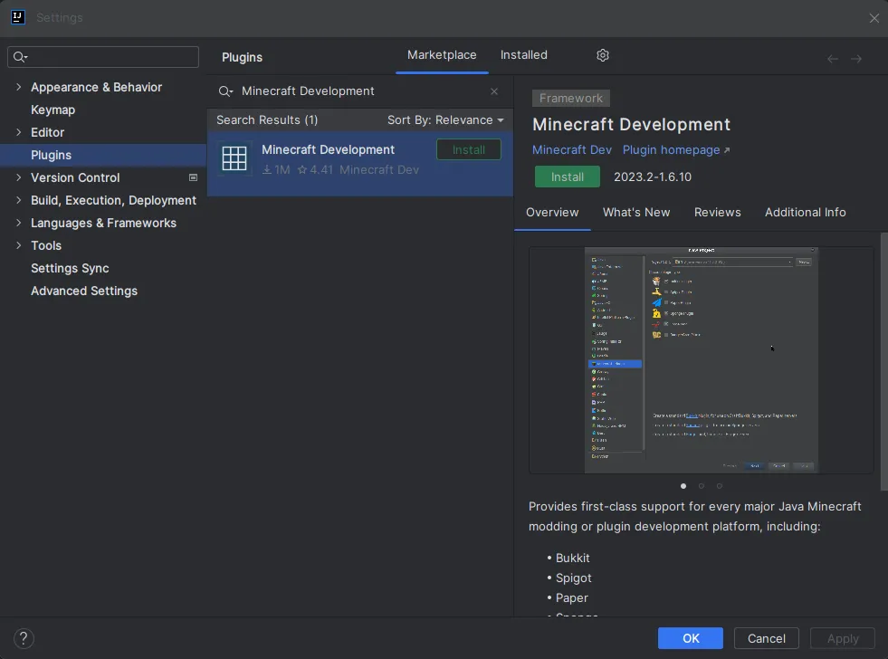
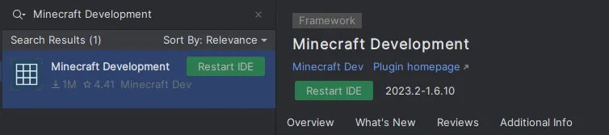
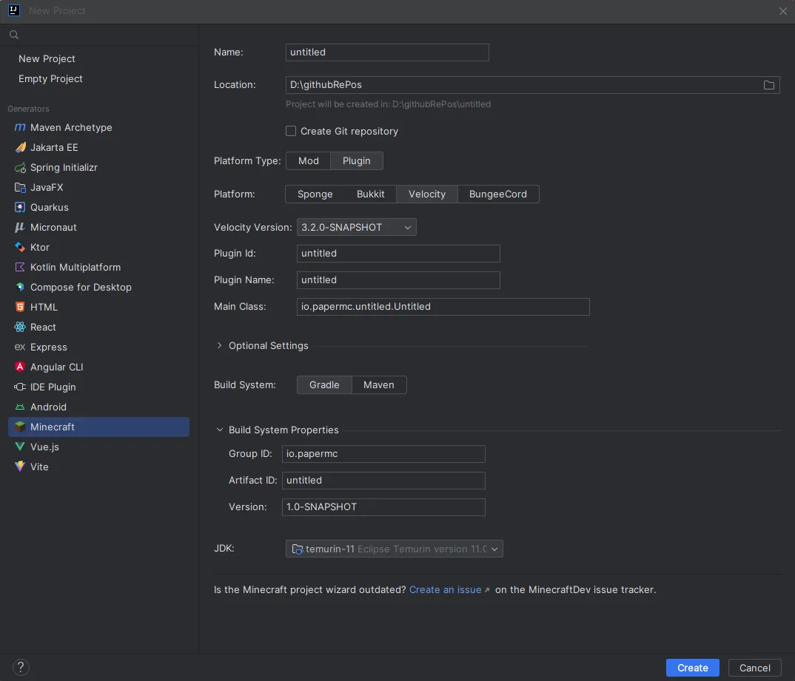
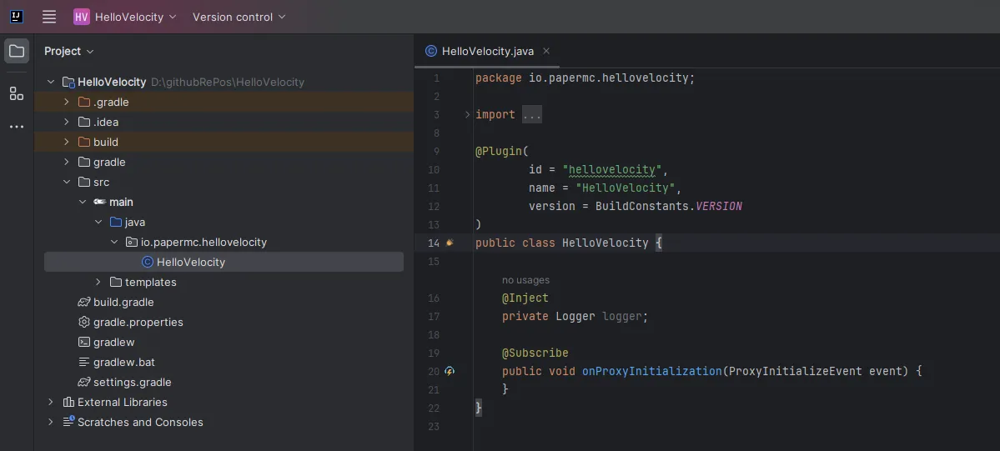

Creating your first plugin
How to create your first plugin with the Velocity API.
It is very simple to create a plugin for Velocity. This section will teach you how to set up your IDE, your plugin identifiers, and give you an introduction to the basics of the Velocity API.
Before you continue…#
You will need proficiency in the Java programming language. If you don’t know Java yet, we strongly recommend you learn some basic Java before you continue.
Set up your environment#
You’re going to need the JDK and an IDE. If you don’t have an IDE, IntelliJ IDEA is recommended.
Creating the project in your IDE#
- Open your IDE
- Click
Create New Projector the equivalent - Select either
GradleorMaven - Make sure your Project JDK is Java 25 or later
- Finish the dialog and open the project.
Now we have created our project, we need configure our build system.
I know how to do this. Give me what I need!#
Maven repository#
| Name | URL |
|---|---|
papermc | https://repo.papermc.io/repository/maven-public/ |
Dependency#
| Group ID | Artifact ID | Version |
|---|---|---|
com.velocitypowered | velocity-api | 4.2.1-SNAPSHOT |
Javadocs#
Javadocs are available at jd.papermc.io.
Set up your build system#
You will need to set up a build system before you continue. While it is possible to write Velocity plugins without one, having a build system will make your life a lot less difficult.
How to set up a build system is outside the scope of this page, but you can look at your build system’s documentation (Gradle or Maven) for assistance.
Setting up the dependency#
Gradle (Kotlin)#
repositories {
maven(url = "https://repo.papermc.io/repository/maven-public/") {
name = "papermc"
}
}
dependencies {
compileOnly("com.velocitypowered:velocity-api:4.2.1-SNAPSHOT")
// If you want your velocity-plugin.json file to be generated based on plugin annotations
annotationProcessor("com.velocitypowered:velocity-api:4.2.1-SNAPSHOT")
}Gradle (Groovy)#
repositories {
maven {
name = 'papermc'
url = 'https://repo.papermc.io/repository/maven-public/'
}
}
dependencies {
compileOnly 'com.velocitypowered:velocity-api:4.2.1-SNAPSHOT'
// If you want your velocity-plugin.json file to be generated based on plugin annotations
annotationProcessor 'com.velocitypowered:velocity-api:4.2.1-SNAPSHOT'
}Maven 4+#
<project>
<repositories>
<repository>
<id>papermc</id>
<url>https://repo.papermc.io/repository/maven-public/</url>
</repository>
</repositories>
<dependencies>
<dependency>
<groupId>com.velocitypowered</groupId>
<artifactId>velocity-api</artifactId>
<version>4.2.1-SNAPSHOT</version>
<scope>provided</scope>
</dependency>
<!-- add the annotation processor if you want your velocity-plugin.json file to be generated -->
<dependency>
<groupId>com.velocitypowered</groupId>
<artifactId>velocity-api</artifactId>
<version>4.2.1-SNAPSHOT</version>
<type>processor</type>
</dependency>
</dependencies>
</project>Maven 3#
<project>
<repositories>
<repository>
<id>papermc</id>
<url>https://repo.papermc.io/repository/maven-public/</url>
</repository>
</repositories>
<dependencies>
<dependency>
<groupId>com.velocitypowered</groupId>
<artifactId>velocity-api</artifactId>
<version>4.2.1-SNAPSHOT</version>
<scope>provided</scope>
</dependency>
</dependencies>
<build>
<plugins>
<plugin>
<groupId>org.apache.maven.plugins</groupId>
<artifactId>maven-compiler-plugin</artifactId>
<configuration>
<!-- add the annotation processor if you want your velocity-plugin.json file to be generated -->
<annotationProcessorPaths>
<path>
<groupId>com.velocitypowered</groupId>
<artifactId>velocity-api</artifactId>
<version>4.2.1-SNAPSHOT</version>
</path>
</annotationProcessorPaths>
</configuration>
</plugin>
</plugins>
</build>
</project>Using the Minecraft Development IntelliJ plugin#
Alternatively, you can use the Minecraft Development IntelliJ plugin to create a new project. To do that you need to install the plugin first.
Installing the Minecraft Development plugin#
The first thing you need to do is install the Minecraft Development plugin. You can do this by going to File > Settings > Plugins and searching for Minecraft Development under the Marketplace section.

Once you have installed the plugin, you will need to restart IntelliJ. To do that you can click the Restart IDE button that appears after installing the plugin.

Creating a new project#
Now that you have installed the plugin, you can create a new project by going to File > New > Project... and selecting Minecraft from the list of options.
Setting up a Velocity project#

You will be asked to provide some information about your project.
| Field | Explanation |
|---|---|
| Name | The name of your project. |
| Location | The location of your project. This is where the project files will be stored. |
| Platform Type | The platform type you are developing for. This should be Plugin. |
| Platform | The platform you are developing for. This should be Velocity. |
| Velocity Version | The version of Velocity you are developing for. |
| Plugin Id | The id of your plugin. |
| Plugin Name | The name of your plugin. |
| Main Class | The main class of your plugin. This class should have the @Plugin annotation. |
| Optional Setting | Here you can define things like authors, website, description, etc. These are optional and not required for the plugin to work. |
| Build System | The build system you want to use. Paper recommends using Gradle but you can use Maven if you prefer. |
| Group ID | The group ID of your project. This is used for Maven and Gradle. This is usually your domain name in reverse. If you don’t know what you should put here, you can use something like io.github.<yourname> or if you don’t have GitHub you can just use me.<yourname>. |
| Artifact ID | The artifact ID of your project. This is used for Maven and Gradle. This is usually the name of your project. This is usually the same as the Name field. |
| Version | The version of your project. This is used for Maven and Gradle. This is usually 1.0-SNAPSHOT and does not really matter for now. |
| JDK | The JDK you want to use. This can be anything from Java 25 and above. |
Now you can click on the Create button and IntelliJ will create the project for you. If everything went well, you should see something like this:

Conclusion#
You should now have a project set up with Velocity as a dependency. All you have left to do now is to compile your plugin and run it on a Velocity server.